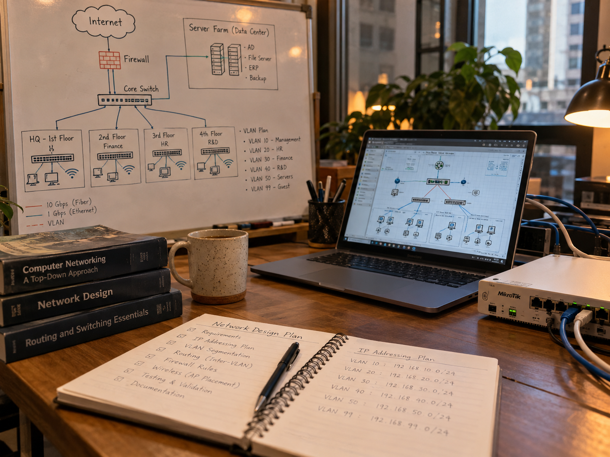
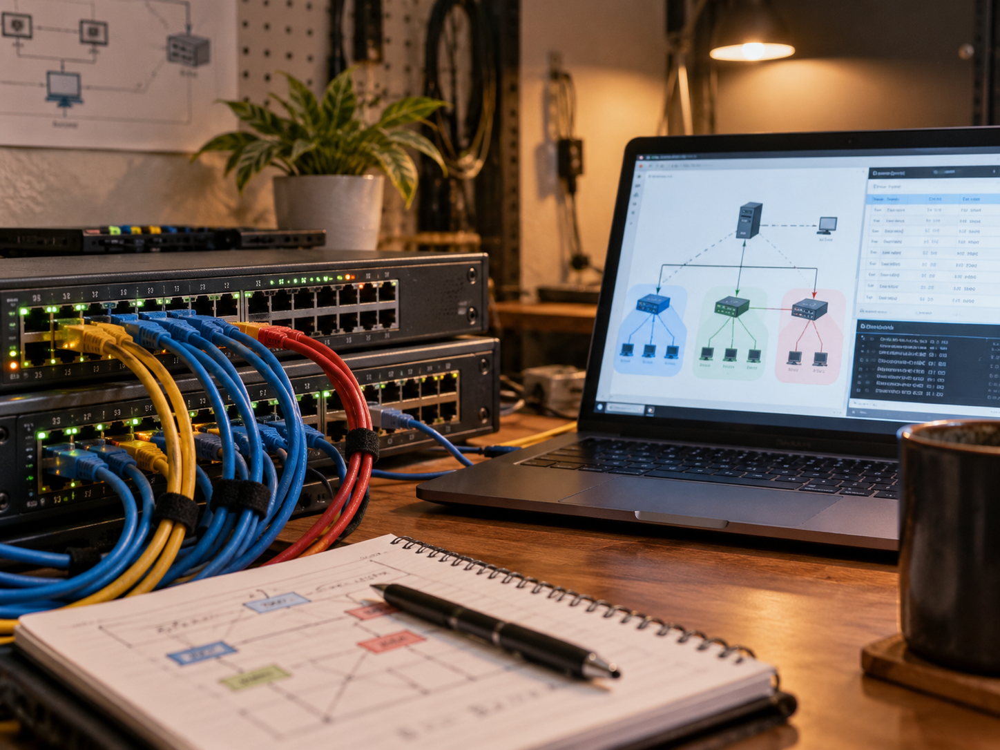
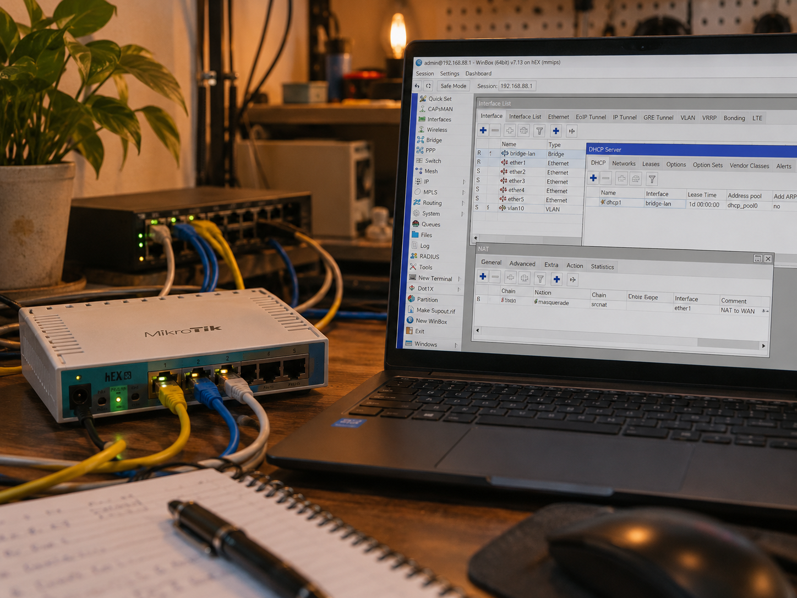
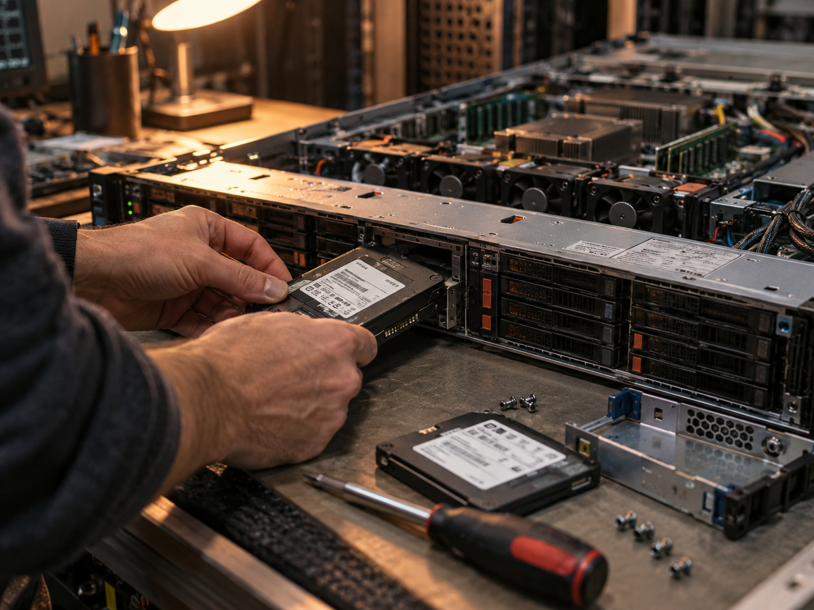
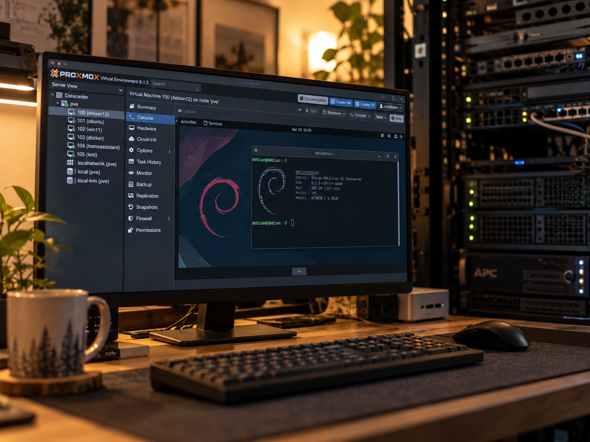
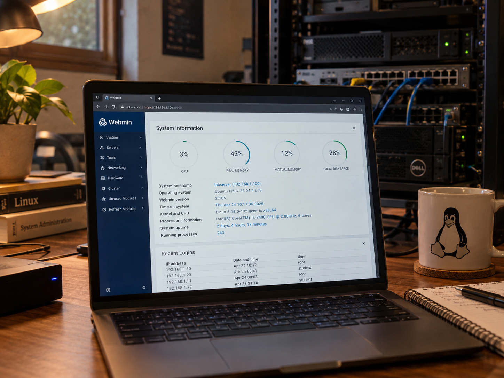

Projects
Delapan lab yang mendokumentasikan perjalanan saya — dari fondasi jaringan, server, sampai keamanan akses. Urutan terlama → terbaru.

Company Network Architecture Design
Mempelajari kondisi jaringan dan membuat rancangan topologi untuk memahami distribusi koneksi, segmentasi, dan struktur jaringan antar area.
Baca artikel →
VLAN & Centralized DHCP Simulation
Simulasi segmentasi jaringan menggunakan VLAN dan DHCP terpusat untuk memahami pembagian jaringan dan distribusi alamat IP.
Baca artikel →
MikroTik Network Configuration Lab
Praktik konfigurasi dasar MikroTik meliputi DHCP, NAT, bridge, VLAN, dan distribusi koneksi jaringan.
Baca artikel →
Server Hardware Upgrade & Deployment
Persiapan dan peningkatan perangkat server melalui pemasangan SSD, pengecekan hardware, dan persiapan sistem sebelum virtualisasi.
Baca artikel →
Proxmox Virtualization Server
Instalasi Proxmox VE dan praktik pembuatan virtual machine Debian untuk memahami dasar virtualisasi server.
Baca artikel →IOC & Threat Intelligence Analysis
Pembelajaran analisis Indicator of Compromise dan pemanfaatan threat intelligence untuk memahami indikator aktivitas mencurigakan.
Baca artikel →
Webmin Server Administration Lab
Praktik administrasi server Debian menggunakan Webmin untuk monitoring resource dan pengelolaan konfigurasi dasar sistem.
Baca artikel →WireGuard, Tailscale & Zero Trust Networking
Mempelajari VPN modern menggunakan WireGuard dan Tailscale serta konsep Zero Trust untuk memahami akses jaringan yang lebih terkontrol.
Baca artikel →